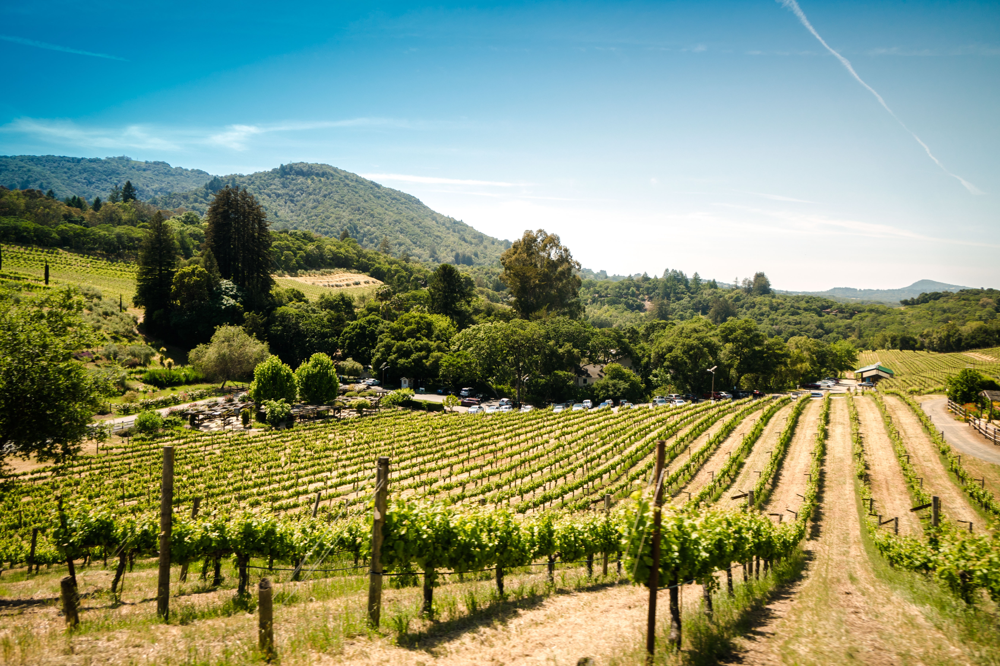

Politics & Economy
Politics: Government
Italy has been a parliamentary democracy since 1 January 1946. It has been a founding member of the European Union ever since 1 January 1952 and is also a member of NATO and the United Nations. Italy's Head of State is the president, who has a predominantly representative role similiar to his colleagues in Germany and Austria. The country's actual political leader is the prime minister, the head of government. Italy's Parliament is divided into two chambers: the Chamber of Deputies and the Senate - both have equal rights and are responsible for the legislature.
Economy: Industry, Agriculture and Tourism
Italy has a diversified industrial economy, which is divided into a developed industrial north, dominated by private companies, and a less-developed, welfare-dependent, agricultural south, with high unemployment. The Italian economy is driven in large part by the manufacture of high-quality consumer goods produced by small and medium-sized enterprises, many of them family owned. Italy also has a sizable underground economy, which by some estimates accounts for as much as 15% of GDP. These activities are most common within the agriculture, construction, and service sectors. In this last sector, Tourism plays a very important role and contributes nearly 10% of it's total income. In recent years, some 40 million tourists a year visited the country. Nevertheless, the country, like many other European destinations, is still struggling with a decline in overnight stays after the tourist boom of the last decade.
